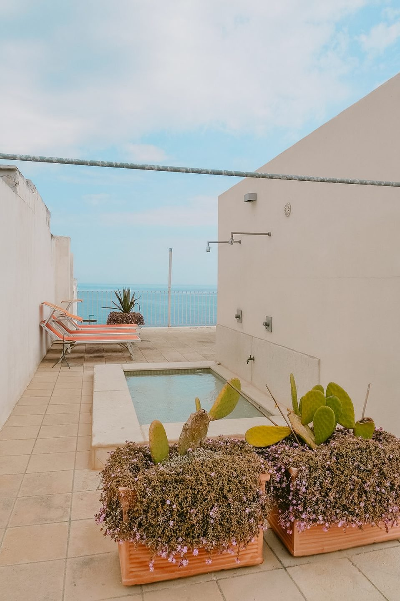
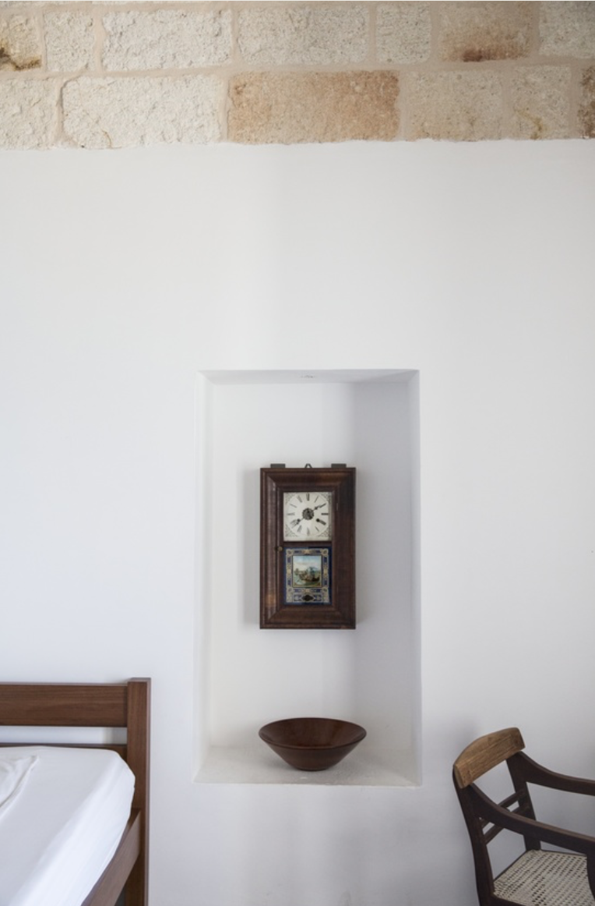

.jpg)


KINFOLK
Featured in Kinfolk in 2015 in a piece titled "A Home In Italy Facing The Adriatic Sea."
“From the outside it just looks like a normal town house, but as soon as you enter you are dragged by the light to the sea-facing kitchen and out onto the large terrace courtyard that hangs 20 meters above the water.”
“From the outside it just looks like a normal town house, but as soon as you enter you are dragged by the light to the sea-facing kitchen and out onto the large terrace courtyard that hangs 20 meters above the water.”
ELLE
Featured in August 2012, in a piece titled "The Aroma of Salt Air. Italy, Architecture exterior, Adriatic sea"
NEAR & YONDER
Covered by Near & Yonder, 2020.
"A beautiful conversion of an ancient building by Danish owner Pernille. The décor brings together local handicrafts, African art and pared-back Scandinavian style beneath vaulted ceilings."
"A beautiful conversion of an ancient building by Danish owner Pernille. The décor brings together local handicrafts, African art and pared-back Scandinavian style beneath vaulted ceilings."
THE SPACES
Featured on "The Spaces" in 2019.
A holiday home that hovers 70 ft above the Mediterranean might sound precarious, but the height adds to the drama at this retreat in Puglia. ‘You feel as if you are on your own island with nothing but the wide ocean in front of you,’ says owner Pernille.
A holiday home that hovers 70 ft above the Mediterranean might sound precarious, but the height adds to the drama at this retreat in Puglia. ‘You feel as if you are on your own island with nothing but the wide ocean in front of you,’ says owner Pernille.
MERAVIGLIA PAPER
Featured on Meraviglia Paper in 2018.
‘32 sq. m. of sea’. Water is the primary element that always fascinated Pino Pascali. The artist re-created his own sea in zinc tubs, each one containing a tone-on-tone variation of the colour of the sea. Pino Pascali, the greatest Apulian artist, was born in Bari on 19th October 1935. His parents came from Polignano a Mare. Very soon, his works emphasized his Mediterranean culture. Spend some days on the edge of the sea in this villa that hangs on the rock, arm wrestle with the wind to open the salty shutters of your room on a deep blue, and forget about the others, about the village, and about postcard-style Polignano. Palazzo Penelope is just modern quiet and silence, and the company of primary elements: sky, sea, dazzling sun that dries linens on a flat roof, and wind that dries your skin. The fire in the living room fireplace is out, the guitar awaits, the little red peaches tell us that it is summer already, and in some braceria in town, cicely-flavoured sausages are sizzling while fresh broad beans cook. I wasn’t born near the sea and my father did not take me there often, but at some point, very soon, the Mediterranean Sea got me, too.
‘32 sq. m. of sea’. Water is the primary element that always fascinated Pino Pascali. The artist re-created his own sea in zinc tubs, each one containing a tone-on-tone variation of the colour of the sea. Pino Pascali, the greatest Apulian artist, was born in Bari on 19th October 1935. His parents came from Polignano a Mare. Very soon, his works emphasized his Mediterranean culture. Spend some days on the edge of the sea in this villa that hangs on the rock, arm wrestle with the wind to open the salty shutters of your room on a deep blue, and forget about the others, about the village, and about postcard-style Polignano. Palazzo Penelope is just modern quiet and silence, and the company of primary elements: sky, sea, dazzling sun that dries linens on a flat roof, and wind that dries your skin. The fire in the living room fireplace is out, the guitar awaits, the little red peaches tell us that it is summer already, and in some braceria in town, cicely-flavoured sausages are sizzling while fresh broad beans cook. I wasn’t born near the sea and my father did not take me there often, but at some point, very soon, the Mediterranean Sea got me, too.